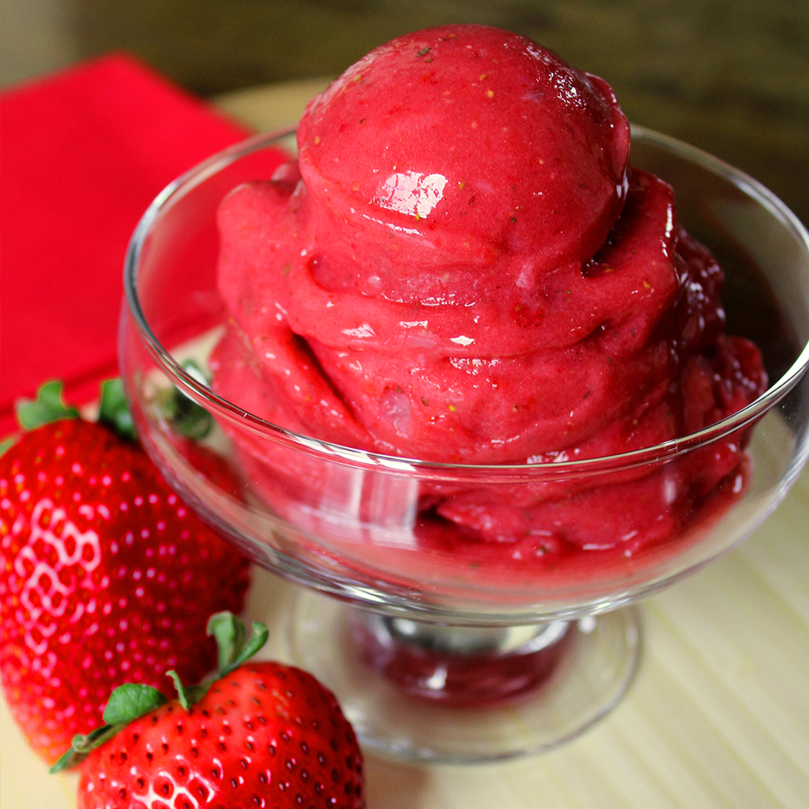

STRAWBERRY SORBET

Delicious Sorbet for the Hottest Days!
An easy yet tasty strawberry sorbet to make. Only two ingredients and a plate full of happiness!
INGREDIENTS
- Two cups Frozen Strawberries
- ¼ cup Sweetened Condensed Milk
STEPS
- Put strawberries and condensed milk in a high-powered blender
- Blend, stopping occasionally to scrape down the sides of the blender with a spatula, until completely smooth
- Transfer into a freezer container and freeze for 2 hours
-
Nutrition Facts
-
Per Serving:
200 calories; protein 4g; carbohydrates 41g; fat 3.6g; cholesterol 13mg; sodium 53m